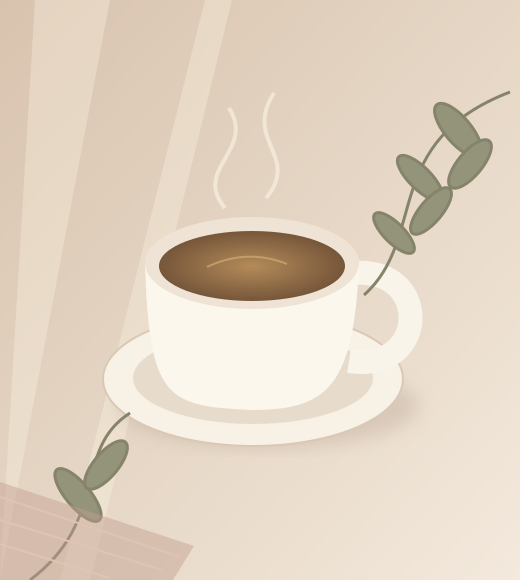

GUIA COMPLETO · DIGITAL · FEITO PARA VOCÊ
MENOPAUSA
REAL 40+
REAL 40+
Seu corpo está mudando.
Você merece entender essa fase.
Calorões, sono diferente, humor e energia oscilando? Encontre informação simples e acolhedora para compreender o climatério e cuidar de você com mais consciência.
✓ Entenda as mudanças✓ Descubra hábitos de autocuidado✓ Prepare suas próximas conversas
Seu guia completo porR$ 29,90pagamento único
QUERO ENTENDER MELHOR MEU CORPO Compra segura pela Cakto · PDF digital · Acesso vitalício
Mais equilíbrio
para essa nova fase. ♡
para essa nova fase. ♡
UM GUIA PRÁTICO PARA SUA NOVA FASE
MENOPAUSA
REAL 40+
REAL 40+
Entenda seu corpo.
Cuide de você com mais consciência.
GUIA DIGITAL · MULHERES 40+
♡
Um novo capítulo.
O mesmo valor: você.
O mesmo valor: você.
FORMATO DIGITALPDFLEIA ONDE QUISER
Acesso imediato*▤ Produto digital∞ Acesso vitalício♡ Feito para mulheres 40+
VOCÊ NÃO ESTÁ SOZINHA
Talvez você esteja vivendo isso…
Nem sempre é fácil colocar em palavras. Mas talvez você se reconheça aqui.
Calor que aparece
Acordar várias vezes
durante a noite
Irritação e mudanças
de humor
Cansaço
constante
Mudanças
na libido
Ressecamento ou
desconfortos íntimos
Corpo e peso
respondendo diferente
Sensação de não estar
se reconhecendo
Muitas mulheres começam a perceber essas mudanças antes mesmo de entender que podem estar entrando no climatério. Informação pode tornar essa fase muito menos confusa.

Uma pausa para
olhar para você.
olhar para você.
CONHECIMENTO COM ACOLHIMENTO
Foi por isso que criamos o Menopausa Real 40+
Um material visual, fácil de ler e desenvolvido especialmente para mulheres que querem compreender melhor essa nova fase sem linguagem complicada.
O que ninguém te explicou sobre sono, calorões, humor, corpo e bem-estar depois dos 40.
- Climatério x menopausa
- Principais sinais
- Sono e rotina noturna
- Calorões e suor noturno
- Humor e emoções
- Corpo, energia e bem-estar
- Intimidade e saúde feminina
- Hábitos de autocuidado
- Quando procurar orientação profissional
LEVE NA LEITURA. RICO EM INFORMAÇÃO.
Não é mais uma apostila cansativa.
O Menopausa Real 40+ foi pensado para ser lido com facilidade pelo celular.
❧
Uma nova fase.
Um novo olhar.
Entender o que acontece com você é o começo de um cuidado mais consciente.
ACOLHA A SUA HISTÓRIAClimatério e
menopausa:
vamos conversar?
Climatério é a transição entre a fase reprodutiva e a não reprodutiva. Menopausa é um marco: a última menstruação, reconhecida após 12 meses sem menstruar.
Cada mulher vive essa fase de um jeito. A sua experiência merece atenção.
INFORMAÇÃO SEM COMPLICAÇÃOUm ritual para
desacelerar.
Pequenos hábitos para observar na sua rotina noturna:
- Reserve um tempo para relaxar
- Observe a temperatura do quarto
- Converse sobre noites difíceis
Composição ilustrativa dos temas abordados no e-book.
16 páginas premium e ilustradasTextos curtos e leitura fácilImagens bonitasChecklists e dicas práticasLinguagem simples
UM OLHAR MAIS GENTIL PARA VOCÊ
Quanto mais você entende seu corpo,
menos assustadoras ficam as mudanças.
culpa→compreensão
confusão→informação
silêncio→conversa
medo→autocuidado
“Uma nova fase não significa
uma versão pior de você.”
UM PRESENTE DE VOCÊ PARA VOCÊ
Tenha acesso agora ao Menopausa Real 40+
Informação para acolher suas dúvidas.
Um guia para acompanhar seu novo capítulo.
Uma nova fase.
Um novo olhar para você.
Um novo olhar para você.
SEU GUIA DIGITAL COMPLETO
MENOPAUSA REAL 40+
- E-book digital completo
- Leitura no celular, tablet ou computador
- Acesso vitalício
- Liberação imediata após a compra*
Pagamento único de
R$ 29,90
Sem mensalidade. Para ler no seu tempo.
QUERO MEU GUIA AGORAPagamento seguro pela Cakto. Acesso liberado após a confirmação do pagamento.
♧ Compra segura · Entrega digital
ESSE MOMENTO TAMBÉM É SEU
Este guia é
para você que…
Não importa se as mudanças começaram agora ou já fazem parte da sua rotina. Você merece entendê-las melhor.
- Tem 40 anos ou mais
- Percebeu mudanças no corpo
- Acredita que pode estar no climatério
- Já está na menopausa
- Quer entender melhor seus sintomas
- Quer chegar mais preparada para conversar com um profissional
- Busca uma rotina de autocuidado mais consciente
PODE PERGUNTAR
Suas dúvidas,
com clareza.
Os detalhes para você dar esse próximo passo com tranquilidade.
É um produto físico?
Não. O Menopausa Real 40+ é um produto digital em PDF.
Como recebo?
Após a confirmação do pagamento, seu acesso é liberado pela área de membros da plataforma de entrega da Cakto.
Posso ler pelo celular?
Sim. O material foi desenvolvido pensando principalmente na leitura pelo celular.
Por quanto tempo tenho acesso?
O acesso é vitalício.
O guia substitui consulta médica?
Não. O material é educativo e não substitui diagnóstico, consulta ou acompanhamento profissional.
Você não precisa continuar passando por essa fase sem entender o que está acontecendo.
Conhecer seu corpo é um dos primeiros passos para cuidar melhor de você.
MENOPAUSA REAL 40+
Informação, autocuidado e bem-estar para uma nova fase da sua vida.
R$ 29,90
QUERO ACESSAR O MENOPAUSA REAL 40+ Seu próximo capítulo pode começar com mais informação.